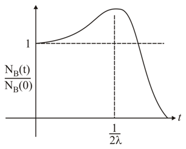

⚡ Semiconductors & Electronic Devices
94
Total Questions
5
Years
4
Clusters
Question Clusters
PHY-SEMIELEC-PN_JUNCTION_DIODE
Semiconductors & Electronic Devices: P-N Junction Diodes & V-I Characteristics
PHY-SEMIELEC-LOGIC_GATES
Semiconductors & Electronic Devices: Logic Gates & Truth Tables
PHY-SEMIELEC-ZENER_DIODE_REGULATOR
Semiconductors & Electronic Devices: Zener Diode as Voltage Regulator
PHY-SEMIELEC-RECTIFIERS_FILTERS
Semiconductors & Electronic Devices: Half-Wave & Full-Wave Rectifiers
Year-wise Frequency
| Year | Questions | Frequency |
|---|---|---|
| 2021 | 33 | |
| 2022 | 13 | |
| 2023 | 23 | |
| 2024 | 18 | |
| 2025 | 7 |
Questions
Showing first 50 of 94 questions.
Q20 (2021 Shift 2)
In the given figure, each diode has a forward bias resistance of 30 Ω and infinite resistance in reverse bias. The current will be : 𝐼1
PHY-2021-0101-S2-Q020
Q6 (2021 Shift 1)
The pressure acting on a submarine is 3 × 105 Pa at a certain depth. If the depth is doubled, the percentage 105 increase in the pressure acting on the submarine would be: (Assume that atmospheric pressure is 1 × Pa density of water is 103 kg m−3, g = 10 ms−2 )
PHY-2021-0101-S1-Q006
Q29 (2021 Shift 1)
The value of power dissipated across the zener diode (Vz = 15 V) connected in the circuit as shown in the figure is x × 10−1 W . The value of x to the nearest integer is _______.
Answer:
5PHY-2021-0101-S1-Q029
Q19 (2021 Shift 2)
The following logic gate is equivalent to :
PHY-2021-0101-S2-Q019
Q1 (2021 Shift 1)
A car accelerates from rest at a constant rate α for some time after which it decelerates at a constant rate β to come to rest. If the total time elapsed is t seconds, the total distance travelled is:
PHY-2021-0101-S1-Q001
Q19 (2021 Shift 1)
The output of the given combination gates represents:
PHY-2021-0101-S1-Q019
Q30 (2021 Shift 1)
An npn transistor operates as a common emitter amplifier with a power gain of 106. The input circuit resistance is 100 Ω and the output load resistance is 10 kΩ. The common emitter current gain will be (Round off to the Nearest Integer) β
Answer:
100PHY-2021-0101-S1-Q030
Q20 (2021 Shift 2)
The correct relation between α (ratio of collector current to emitter current) and β (ratio of collector current to base current) of a transistor is :
PHY-2021-0101-S2-Q020
Q29 (2021 Shift 2)
The typical output characteristics curve for a transistor working in the common-emitter configuration is shown in the figure. The estimated current gain from the figure is

Answer:
200PHY-2021-0101-S2-Q029
Q29 (2021 Shift 2)
A zener diode having zener voltage 8 V and power dissipation rating of 0. 5 W is connected across a potential divider arranged with maximum potential drop across zener diode is as shown in the diagram. The value of protective resistance Rp is _____ Ω.
Answer:
192PHY-2021-0101-S2-Q029
Q30 (2021 Shift 2)
For the forward biased diode characteristics shown in the figure, the dynamic resistance at ID = 3 mA will be ________ Ω.

Answer:
25PHY-2021-0101-S2-Q030
Q19 (2021 Shift 1)
Consider a situation in which reverse biased current of a particular P −N junction increases when it is exposed to a light of wavelength ≤621 nm. During this process, enhancement in carrier concentration takes place due to generation of hole-electron pairs. The value of band gap is nearly.
PHY-2021-0101-S1-Q019
Q30 (2021 Shift 1)
In a given circuit diagram, a 5 V zener diode along with a series resistance is connected across a 50 V power supply. The minimum value of the resistance required, if the maximum zener current is 90 mA will be Ω.
Answer:
500PHY-2021-0101-S1-Q030
Q19 (2021 Shift 2)
Zener breakdown occurs in a p −n junction having p and n both:
PHY-2021-0101-S2-Q019
Q20 (2021 Shift 2)
Given below are two statements: Statement I : p −n junction diodes can be used to function as a transistor, simply by connecting two diodes, back to back, which acts as the base terminal Statement II: In the study of transistors, the amplification factor β indicates ratio of the collector current to the base current. In the light of the above statements, choose the correct answer from the options given below.
PHY-2021-0101-S2-Q020
Q18 (2021 Shift 2)
The truth table for the following logic circuit is :

PHY-2021-0101-S2-Q018
Q19 (2021 Shift 2)
For extrinsic semiconductors; when doping level is increased;
PHY-2021-0101-S2-Q019
Q19 (2021 Shift 1)
Identify the logic operation carried out.
PHY-2021-0101-S1-Q019
Q29 (2021 Shift 2)
In a semiconductor, the number density of intrinsic charge carriers at is 1016 m−3 . If the 27°C 1. 5 × semiconductor is doped with an impurity atom, the hole density increases to 4. 5 × 1022 m−3 . The electron density in the doped semiconductor is _______ ×109 m−3
Answer:
5PHY-2021-0101-S2-Q029
Q19 (2021 Shift 1)
Statement I: By doping silicon semiconductors with pentavalent material, the electrons density increases. Statement II: The n− type of semiconductor has a net negative charge. In the above statements, choose the most appropriate answer from the options given below:
PHY-2021-0101-S1-Q019
Q19 (2021 Shift 2)
Four NOR gates are connected as shown in figure. The truth table for the given figure is :

PHY-2021-0101-S2-Q019
Q30 (2021 Shift 2)
For the given circuit, the power across zener diode is _____ mW .
Answer:
120PHY-2021-0101-S2-Q030
Q29 (2021 Shift 2)
The zener diode has a . The current passing through the diode for the following circuit is___ Vz = 30 V mA.
Answer:
9PHY-2021-0101-S2-Q029
Q20 (2021 Shift 1)
For a transistor in CE mode to be used as an amplifier, it must be operated in:
PHY-2021-0101-S1-Q020
Q10 (2021 Shift 2)
Figure shows a rod AB , which is bent in a 120° circular arc of radius R . A charge (−Q) is uniformly distributed over rod AB . What is the electric filed → E at the centre of curvature O ?
PHY-2021-0101-S2-Q010
Q19 (2021 Shift 2)
For a transistor α and β are given as α = IC and β = IC . Then the correct relation between α and β will be: IE IB
PHY-2021-0101-S2-Q019
Q30 (2021 Shift 2)
A zener diode of power rating 2 W is to be used as a voltage regulator. If the zener diode has a breakdown of 10 V and it has to regulate voltage fluctuated between 6 V and 14 V , the value of Rs for safe operation should be _____ Ω .
Answer:
20PHY-2021-0101-S2-Q030
Q12 (2021 Shift 1)
The relative permittivity of distilled water is 81. The velocity of light in it will be: ( Given μr = 1)
PHY-2021-0101-S1-Q012
Q20 (2021 Shift 2)
Find the truth table for the function Y of A and B represented in the following figure.
PHY-2021-0101-S2-Q020
Q23 (2021 Shift 2)
The water is filled up to a height of 12 m in a tank having vertical sidewalls. A hole is made in one of the walls at a depth h below the water level. The value of h for which the emerging stream of water strikes the ground at the maximum range is _____ m .
Answer:
6PHY-2021-0101-S2-Q023
Q20 (2021 Shift 1)
In the following logic circuit the sequence of the inputs A, B are (0, 0), (0, 1), (1, 0) and (1, 1). The output Y for this sequence will be :
PHY-2021-0101-S1-Q020
Q19 (2021 Shift 2)
If 𝑉𝐴 and 𝑉𝐵 are the input voltages (either 5 V or 0 V) and V0 is the output voltage then the two gates represented in the following circuits 𝐴 and 𝐵 are :
PHY-2021-0101-S2-Q019
Q20 (2021 Shift 2)
Statement I : To get a steady DC output from the pulsating voltage received from a full wave rectifier we can connect a capacitor across the output parallel to the load 𝑅𝐿. Statement II : To get a steady DC output from the pulsating voltage received from a full wave rectifier we can connect an inductor in series with 𝑅𝐿. In the light of the above statements, choose the most appropriate answer from the options given below :
PHY-2021-0101-S2-Q020
Q30 (2022 Shift 1)
A transistor is used in common-emitter mode in an amplifier circuit. When a signal of 10 mV is added to the base-emitter voltage, the base current changes by 10μA and the collector current changes by 1. 5 mA . The load resistance is 5kΩ . The voltage gain of the transistor will be _____ .
Answer:
750PHY-2022-0101-S1-Q030
Q19 (2022 Shift 1)
The photodiode is used to detect the optical signals. These diodes are preferably operated in reverse biased mode because
PHY-2022-0101-S1-Q019
Q19 (2022 Shift 2)
Identify the logic operation performed by the given circuit

PHY-2022-0101-S2-Q019
Q26 (2022 Shift 2)
When a gas filled in a closed vessel is heated by raising the temperature by 1°C, its pressure increases by 0 . 4% The initial temperature of the gas is _____ 𝐾.

Answer:
250PHY-2022-0101-S2-Q026
Q19 (2022 Shift 1)
The characteristics of a junction diode in forward bias is shown in the figure. The ratio of I −V p −n dynamic resistance, corresponding to forward bias voltage of 2 V and 4 V respective is
PHY-2022-0101-S1-Q019
Q19 (2022 Shift 2)
The positive feedback is required by an amplifier to act as an oscillator. The feedback here means
PHY-2022-0101-S2-Q019
Q20 (2022 Shift 1)
Identify the correct Logic Gate for the following output (Y ) of two inputs A and B .
PHY-2022-0101-S1-Q020
Q19 (2022 Shift 2)
For a transistor to act as a switch, it must be operated in
PHY-2022-0101-S2-Q019
Q30 (2022 Shift 2)
The cut-off voltage of the diodes (shown in figure) in forward bias is 0. 6 V . The current through the resister of 40Ω is _____ mA .
Answer:
4PHY-2022-0101-S2-Q030
Q19 (2022 Shift 1)
Given below are two statements : One is labelled as Assertion A and the other is labelled as Reason R. Assertion A : n −p −n transistor permits more current than a p −n −p transistor. Reason R : Electrons have greater mobility as a charge carrier.
PHY-2022-0101-S1-Q019
Q10 (2022 Shift 2)
What will be the effect on the root mean square velocity of oxygen molecules if the temperature is doubled and oxygen molecule dissociates into atomic oxygen?
PHY-2022-0101-S2-Q010
Q29 (2022 Shift 2)
A Zener of breakdown voltage = 8 V and maximum Zener current, = 10 mA is subjected to an input VZ IZM voltage Vi = 10 V with series resistance R = 100 Ω . In the given circuit RL represents the variable load resistance. The ratio of maximum and minimum value of RL is _____ .
Answer:
2PHY-2022-0101-S2-Q029
Q30 (2022 Shift 1)
A transistor is used in an amplifier circuit in common emitter mode. If the base current changes by 100 μA , it brings a change of 10 mA in collector current. If the load resistance is 2 kΩ and input resistance is 1 kΩ , the value of power gain is x × 104 . The value of x is _____ .

Answer:
2PHY-2022-0101-S1-Q030
Q19 (2023 Shift 1)
Match the List I with List II List I List II AIntrinsic Semiconductor I Fermi-level near valence band Fermi-level at middle of valence and conduction B n-type semiconductor II band C p-type semiconductor III Fermi-level near conduction band DMetals IVFermi-level inside conduction band Choose the correct answer from the options given below:
PHY-2023-0101-S1-Q019
Q3 (2023 Shift 1)
Given below are two statements: one is labelled as Assertion 𝐴 and the other is labelled as Reason 𝑅. Assertion A: When a body is projected at an angle 45°, its range is maximum. Reason R: For maximum range, the value of sin 2𝜃 should be equal to one. In the light of the above statements, choose the correct answer from the options given below:
PHY-2023-0101-S1-Q003
Q18 (2023 Shift 1)
Name the logic gate equivalent to the diagram attached

PHY-2023-0101-S1-Q018
Q29 (2023 Shift 1)
A pole is vertically submerged in swimming pool, such that it gives a length of shadow 2 . 15 m within water when sunlight is incident at an angle of 30° with the surface of water. If swimming pool is filled to a height of 1 . 5 m, then the height of the pole above the water surface in centimeters is (𝑛𝑤= 4 ) ________ . 3

Answer:
50PHY-2023-0101-S1-Q029